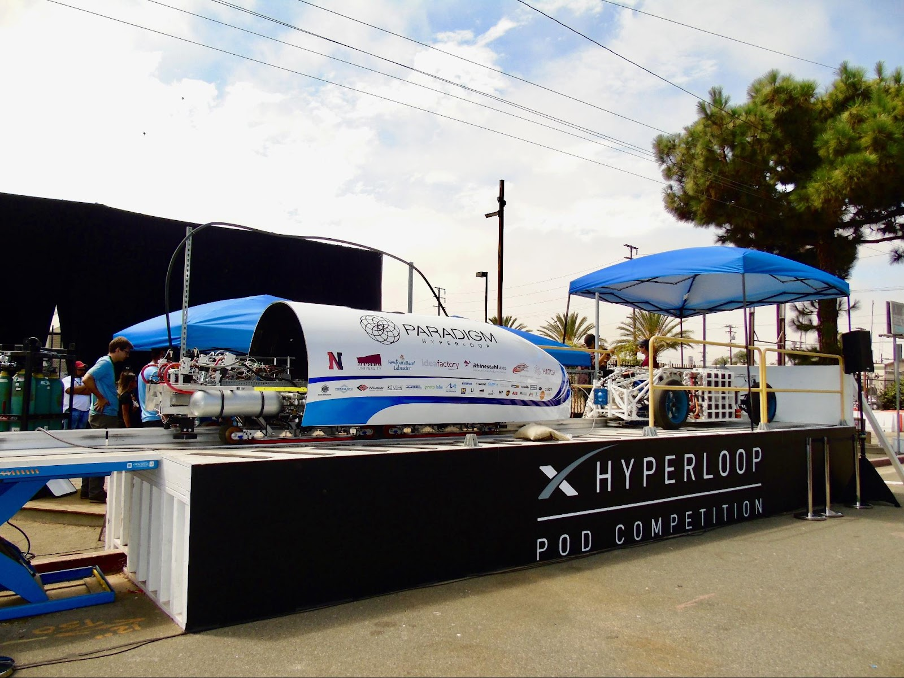
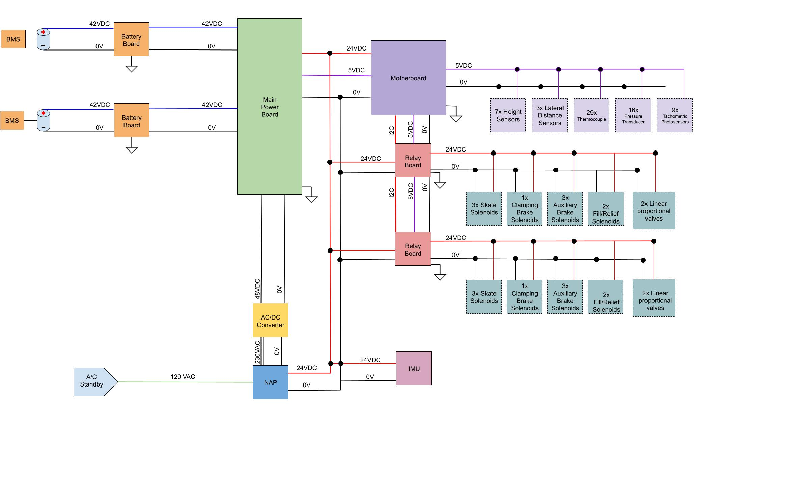

Hyperloop!
What is the hyperloop?
Most of my experience with the hyperloop comes from he SpaceX competitions. Elon Musk published a whitepaper in 2012, outlining a faster and safer way to travel. Advances in the airline industry are expected make air travel more efficient for longer distances, but there is a gap where trains are too slow. The hyperloop is basically a train tunnel pulled to a low vacuum. This reduces drag without being prohibitively expensive, like maintaining a stronger vacuum would be. He would later create a student competition to design, build, and test scaled hyperloop pods. I joined Paradigmin 2016, looking for some more hands on design experience.Oh man did I get it.
The team had some design and a few builds, but it was pretty clear there was quite a bit of work to do elctrically. The battery system used pouch cells (big no for vacuum), the flight computer interface was unreliable, no power budget had been made, a fraction of the sensors were fleshed out, and other subsystems were non-existent. Most of the sparkys (electricals) had done a co-op or two, but we were not nearly experienced enough for this to be a walk in the park. The team grinded through it all, learning something new everyday. I was fortunate to own a few designs and lead/co-lead the electrical team. I learned more over those ~2 years on the team than in most of my classes combined and made some great friends along the way.
The Pod
Let's outline the Pod before getting into design details.
The subsystems evolved over the years but at its core: its 20 feet long, weighs 2000 lbs, and is spec'd to carry another 2000 lbs at 200mph. The levitation system is air based - think of an upside down air hockey table - which creates a cushion of air under the Pod, greatly reducing friction losses. The Pod is autonomous once set to the RUN state, handling navigation, telemetry, and safing itself in the event of an error. Self propulsion wasn't part of the equation until competition III.
High Level Electrical Schematic
This diagram was revised many times since the modules and system were being designed in parallel. There's two redundant battery packs with an integrated battery management system. The battery boards provide some features so the batteries can be charged. All voltage rails are made by the main power board which switches between ground power vs batteries and will pick the healthiest battery. The 24V and 5V rails are tuned a bit higher for cable losses and local regulation.
The Motherboard handles all analog -> digital conversion, communicates with the IMU and relay boards, and connects to the flight computer. This board is where I spent a significant amount of time - learning everything from how to use KiCAD and good schematic practices, PCB layout, power regulation, A to D, and system design. There are 2-3 revisions on Github and the first one ordered that was DOA hangs above my desk.
The Relay boards consist of a series of solid state relays controlled via I2C. They control the solenoids and proportional valves around the Pod. Later versions of the system have additional boards such as thermocouple interfaces that convert the low voltage signals to a more reliable 0-5V.